Mitoyo, Kagawa: things to do, food and stays
Mitoyo · Kagawa
Mitoyo
Highlighted on the Kagawa map.

Stay
URASHIMA VILLAGE
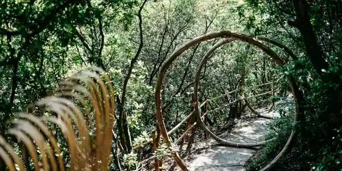
URASHIMA VILLAGE
燧-Hiuchi-
Sui -Hiuchi
SETOUCHI SHOWER-泊Rutto
SETOUCHI SHOWER- Haku Rutto
積凪MOKURASU棟 -泊Rutto
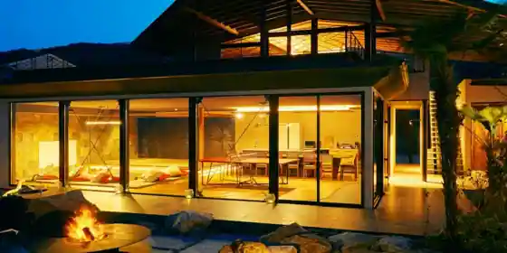
Seki Nagi MOKURASU To - Haku Rutto
Inn in Takuma, Mitoyo with a sauna.
Kanran
Kanran
La toile
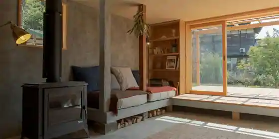
La toile
海と島の隠れ宿 Archipelago TSUSHIMA -泊Rutto
Umi To Shima No Kakure Yado Archipelago TSUSHIMA - Haku Rutto
積凪KITAKEN棟 -泊Rutto
Seki Nagi KITAKEN To - Haku Rutto
NIPPONIA 仁尾 水鏡の町
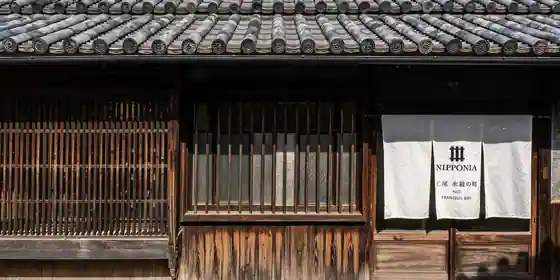
NIPPONIA Nio Mizukagami No Machi
Inn in Nio, Mitoyo with a renovated traditional house.
吾輩は米になる 酒蔵宿 三豊鶴TOJI -泊Rutto
Wagahai Ha Kome Ninaru Shuzo Yado Mitoyo Tsuru TOJI - Haku Rutto
和の抄 ＭＡＣＨＩＹＡ
Nagono Sho MACHIYA
泊まれるIZAKAYA 高瀬茶の湯 JIJI -泊Rutto
Toma Reru IZAKAYA Takase Cha No Yu JIJI - Haku Rutto
Dining
須崎食料品店
Susaki Shokuryohin
本格手打ちうどん もり
Honkaku Teuchi Chiudon Mori
三好うどん
Miyoshi Udon
はまんど
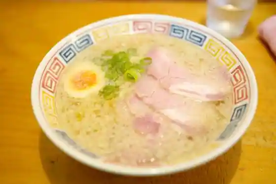
Hamando
シラカワ
Shirakawa
手打うどん 渡辺
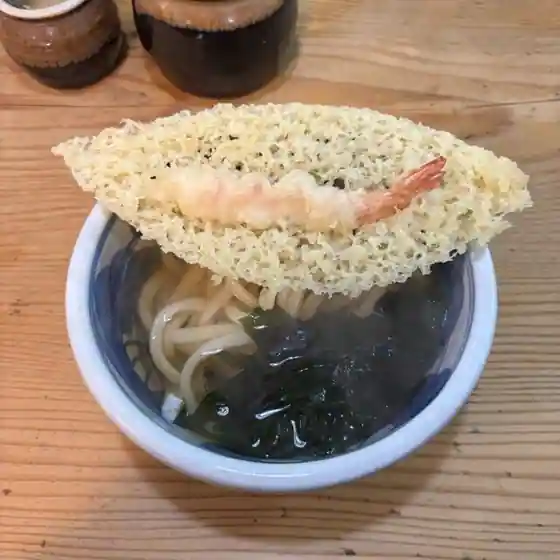
Teuchi Udon Watanabe
BAKE STUDIO OKAZAKI 岡崎製パン所
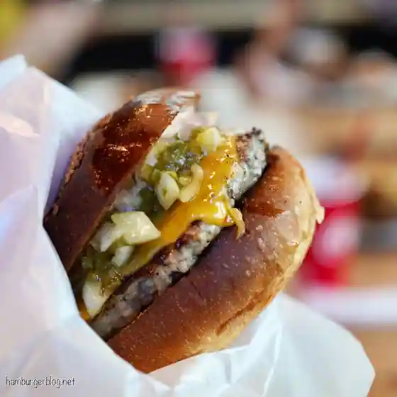
BAKE STUDIO OKAZAKI Okazaki Sei Bakery Tokoro
手打ちうどん 小野
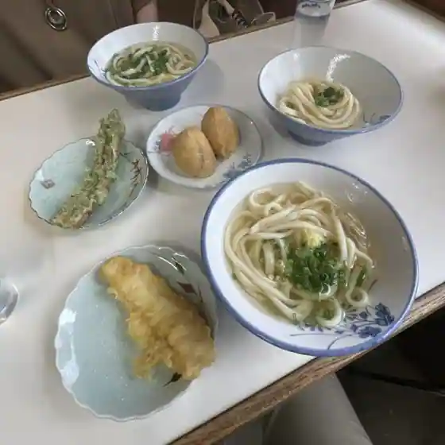
Teuchi Chiudon Ono
KAKIGORI CAFE ひむろ
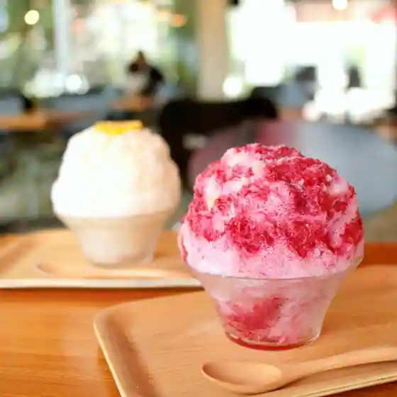
KAKIGORI CAFE Himuro
うどん 松ゆき
Udon Matsu Yuki
上杉食品
Uesugi Shokuhin
浜堂ラーメン
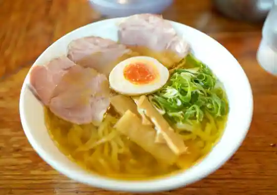
Hama Do Ramen
DOUGHNUT-HOLIC
DOUGHNUT-HOLIC
名物 鳥坂まんじゅう
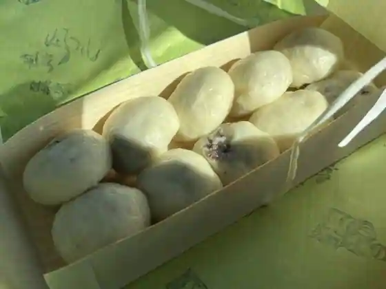
Meibutsu Torisaka Manju
まなべうどん
Manabeudon
いしかわ家
Ishikawa Ie
長兵衛
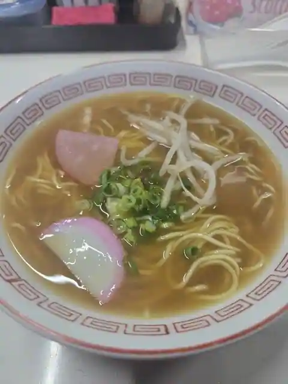
Chobe
○福うどん
Fuku Udon
とんかつの山岡
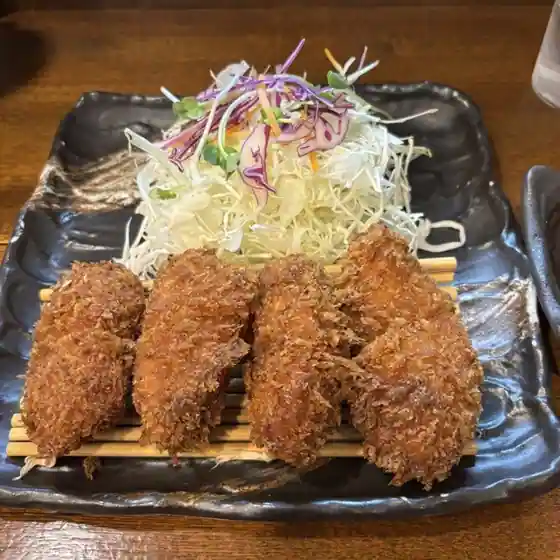
Tonkatsuno Yamaoka
豊潤煮干醤油一生麺a.k.a.ラーメン森
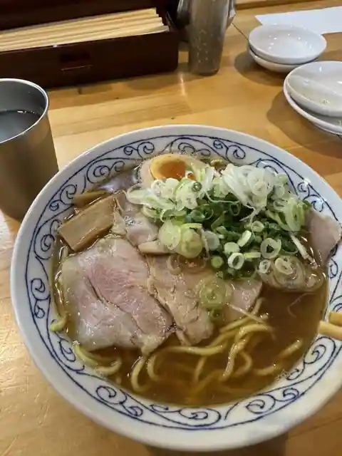
Hojun Niboshi Shoyu Issho Men a. k. a. Ramen Mori
海辺の珈琲研究所 豆豆豆
Umibe No Coffee Kenkyusho Mame Mame Mame
サンカフェ
San Cafe
みどり食堂
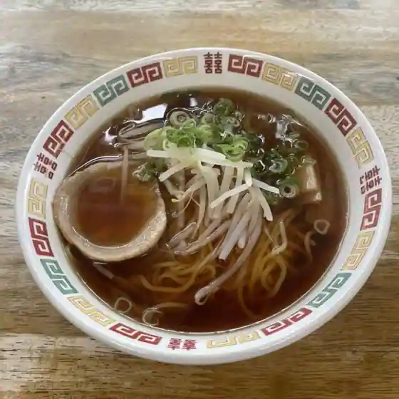
Midori Shokudo
元祖たこ判 小前
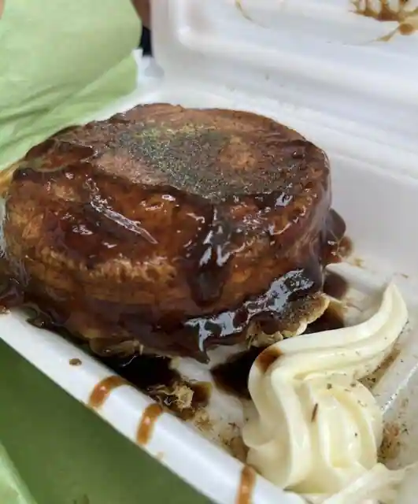
Ganso Tako Han Komae
Sights
Fubogahama
Shiude Yama

Honzan Tera

Ya Tani Tera

Taiko Tera

Tsushima Shrine
Takuma Eki
Fudo Falls